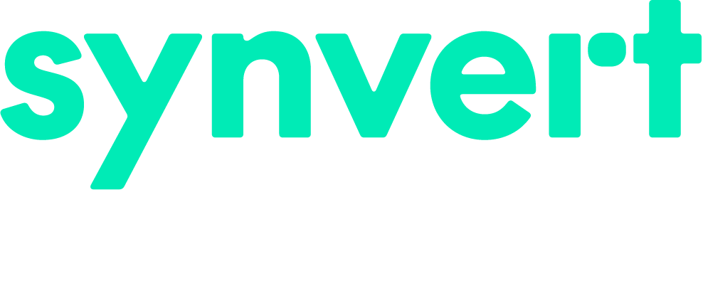
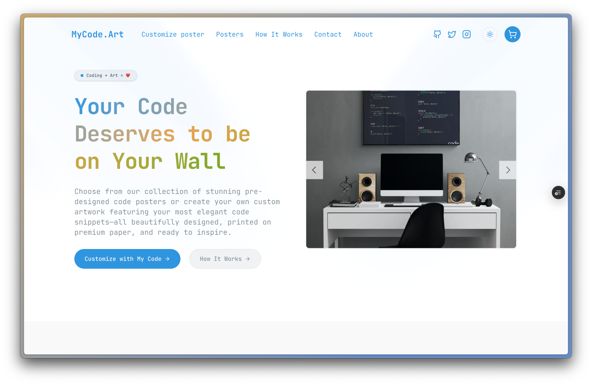
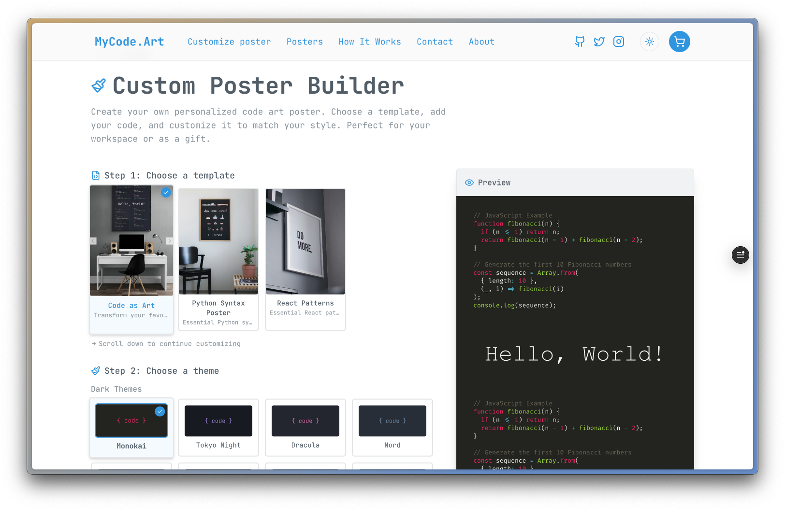
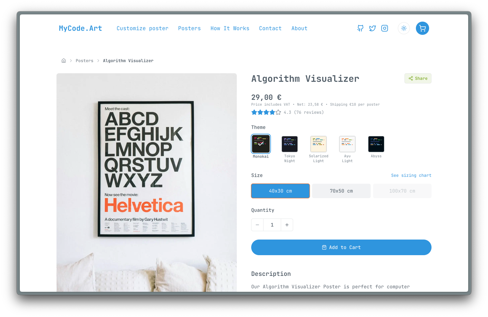
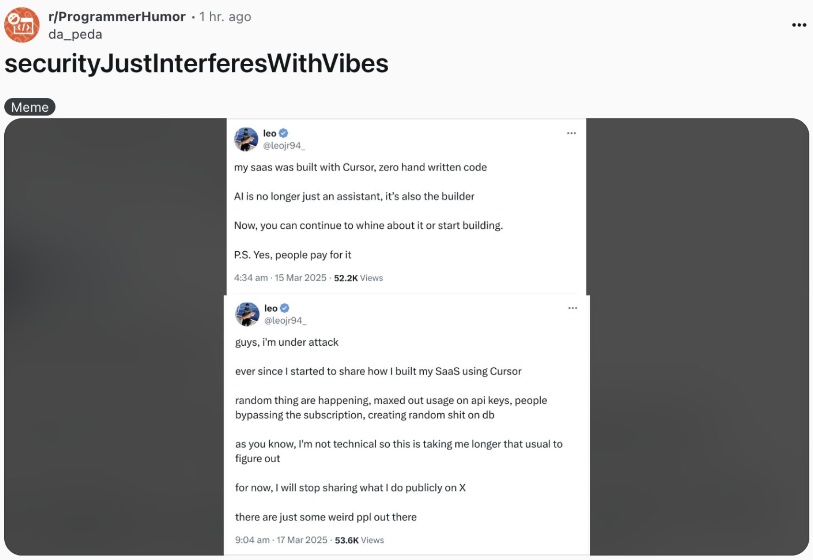
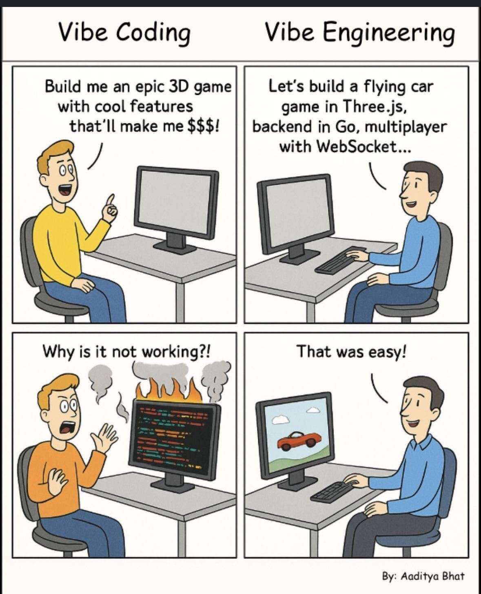

Vibe Coding
Fad or Future?



What is "Vibe Coding"?
A new paradigm in software development:
- AI-assisted development that prioritizes rapid iteration
- Focus on output and results rather than traditional engineering processes
- Emphasis on creative flow and removing technical barriers
- Trading engineering discipline for speed and accessibility
Today's Journey
🛍️ E-commerce Store
Building a poster shop for programmers using vibe coding
🎬 This Presentation
Creating compelling presentations with AI assistance
What these case studies reveal about the future of development
The Programmer Poster Shop
Programmer Poster Shop
Building a side hustle with minimal time investment
The Programmer Poster Shop


Homepage Design
Poster Builder Page
The Challenge
Creating an e-commerce platform with limited time and resources
- Full stack development needed: frontend, backend, design, product
- Traditional approach would require weeks of specialized work
- Multiple technical domains to navigate
Starting with a Prompt
We want to create the base themes (light & dark) color schemes and fonts. Search for the 10 most popular color schemes (light & dark) in IDEs and list them here.
This single prompt provided the base context and initial order of business for the project
The Development Journey
1. Design & Prototype
Rapid iteration of UI/UX with AI-generated code
2. Implementation
Building core functionality with AI code generation and prompting
3. Integration & Testing
Connecting components and fine-tuning the experience
Design Evolution
From AI-generated drafts to final implementation
Design Evolution

BUT.... Not every prompt works
[iteration 2] The state should be lifted up and should be passed down as props to the children of the Builder page client side compomnent.
[iteration 3] The rich text editors should be uncontrolled components, so that changes to the editors can happen freely. All the common state should be updated as callbacks of the rich text editors.
[iteration 4] Still doesn't work. Please fix it.
The end results weren't successful in keeping state well maintained and synced between several different components in a hierarchy

When Vibe Coding Goes Wrong...
Non-technical users can create production issues when technical fundamentals are overlooked
- Missing error handling
- Security vulnerabilities
- Performance bottlenecks
- Poor code organization
Key Challenges
Where vibe coding needed to meet engineering reality:
- Integration between several components (Builder)
- Payment integration options (Stripe)
- Central theming system usage
- Code readability and maintenance
- Security concerns
The Results
The Wins
- Functional store in days instead of weeks
- Clean, modern & responsive design with minimal effort
- Incredible time to market
The Trade-offs
- Some performance inefficiencies
- Needed engineering knowledge for payment integration
- Needed engineering knowledge for builder page
- Maintenance effort builds up over time
Bonus: Planning with Prompts
Using AI to evaluate approaches before implementation:
Each approach should have the following points:
- Summary
- Technical implementation steps
- Pros
- Cons
- Conclusion
This structured approach helps evaluate options before committing to code and helps to backtrack to a previous working version of the code.
Case Study 2:
Creating Presentations with AI
Including this one!
The Presentation Process
- Conceptualizing structure and narrative flow
- Generating visual design and styling
- Creating compelling content and transitions
- Refining and iterating on the final product
Presentation Prompt
This will be a 20 minute talk with 10 minute Q&A and it will be in-person.
I want to cover several topics in this presentation:
1. The creation of an e-commerce store using vibe coding techniques
2. The creation of this presentation using vibe coding techniques
For each of the usecases I want to cover the following:
- The prompt used to create the usecase
- The pros and cons of the approach
- The results achieved and conclusions drawn from the results
The punchline I want to convey is:
- Vibe coding gets things done fast for initial indie dev projects and achieve great time to market
- Engineering knowledge is still needed for production-ready applications and for several more complex use cases
Help me create a compelling presentation structure with animations and transitions. I want the theme of this presentation to be cyberpunk like.
From Concept to Completion
↓
Complete presentation structure, styling, and content in some hours
↓
Refinement based on specific feedback to achieve a final product
Where Vibe Coding Shines
- Rapid prototyping and MVPs
- Solo developers and small teams
- Content creation and tooling
- Internal tools and automation
- Learning new technologies
Where Engineering Knowledge Matters
- Production-grade systems at scale
- Security-critical applications
- Performance optimization
- Complex integrations
- Long-term maintenance
The Optimal Approach
Vibe coding for speed + engineering knowledge for robustness
Start with Vibe Coding:
- Rapid initial development
- Exploration of ideas
- Functional prototypes
Transition to Engineering:
- Production readiness
- Critical components
- Scale and performance

When done right
Vibe Coding:
Not a Fad, But Not the Whole Future
It's a powerful new tool in the engineering toolkit
Q&A
10 minutes for questions and discussion